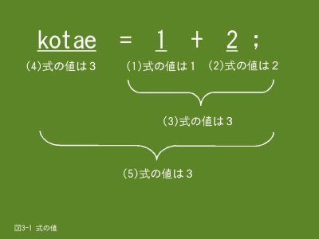

3. 四則演算をするための演算子（1/2）
3.1 代入演算子
ここでは、変数に値を設定する方法を説明します。変数に値を設定するには宣言時に初期値として記述する方法があります。しかし、最初から設定する値が決まっている場合はこれでよいのですが、多くの場合は値が決まっていないでしょう。例えば、２つの値を入力して、その値の加算結果を変数に設定したいような場合があります。
変数に値を設定するには代入演算子の=（等号）を使用します。なお、変数に値を設定することを代入と呼んでいます。
3.1.1 形式
左辺に変数を、右辺に設定したい値を記述します。代入演算子としての=は右辺と左辺の値が等しいという意味ではありませんので注意してください。
変数名 = 値; ← 文になりますので、最後に;（セミコロン）を指定します
- 変数名
- 値を設定したい変数を指定します。変数は予め宣言しておく必要があります。また、今まで設定していた値は上書きされてしまいます。
- =
- 代入演算子の=を指定します。=の前後に空白があっても構いません。
- 値
- 変数に設定する値を指定します。左辺の変数が整数型と浮動小数点数型の場合は数値を、文字型（char型）の場合は１文字（半角の英数字、記号、空白文字）を指定します。ここには変数を指定することもできます。（「変数名 = 変数名;」の形式も可）
3.1.2 例題
この例題プログラムは変数と代入演算子を使う必要性はないのですが、代入演算子の使い方を説明するために使っています。
#include <stdio.h>
int main()
{
int nenrei;
double taijyu;
char ketueki;
/* 年齢、体重、血液型の設定 */
nenrei = 13;
taijyu = 18.5;
ketueki = 'A';
/* プロフィルの出力 */
printf("私のプロフィルです。\n");
printf("・年齢：%d歳\n", nenrei);
printf("・体重：%.1fKg\n", taijyu);
printf("・血液型：%c\n", ketueki);
return 0;
}
- 4〜6行目
- 変数を宣言します。
- 9行目
- int型の変数nenreiniに13（整数）を代入します。
- 10行目
- double型の変数taijyuに18.5（浮動小数点数）を代入します。
- 11行目
- char型の変数ketuekiに半角英字の「A」を代入します。代入する文字は'（アポストロフィ）で括ります。代入できるのは半角１文字のみですので注意してください。
3.2 加減算
ここでは四則演算のうち、加算と減算について説明します。加算と減算は日常の計算で使っている+（正符号）と-（負記号）を使いますので、理解しやすいと思います。また、計算結果を変数に保存（代入）する方法に付いても説明します。
3.2.1 形式
加算は+、減算は-を演算子として使用します。演算結果は値として求まりますので、それをそのまま使用することもできますし、変数に代入演算子で代入することもできます。
値１ + 値２
値１ - 値２
- 値１ + 値２
- 値１と値２の加算を行います。値１と値２には変数や定数を指定します。
- 値1 - 値2
- 値１から値２の減算を行います。値１と値２には変数や定数を指定します。
値１と値２は数値を取り扱える型であれば型名が異なっていても構いません。例えば、値１がint型で値２がdouble型の様な場合です。このような場合は自動的に同じ型に変換して演算を行います。通常、型は精度が高い方に合わせますので、int型とdouble型の混合演算の場合はint型をdouble型に変換して演算を行います。
型が異なりますと型変換のような余分なことが起こりますし、プログラムも理解しにくいものになりがちですので、できるだけ型は同じにした方が良いでしょう。
演算結果を変数に保存したい場合は代入演算子で代入します。例えば、変数kotaeに「1 + 2」の演算結果を代入したい場合は次のように記述します。
kotae = 1 + 2;
代入する場合も左辺と右辺の型が異なっていますと、型変換が起こりますので注意してください。上記例題の場合、右辺の「1 + 2」の演算結果は整数の「3」になりますが、左辺の変数kotaeが整数型であればそのまま代入します。しかし、浮動小数点数型の場合は「3」を浮動小数点数型の値に変換して代入しますので、余分な変換が内部的に行われることになります。
3.2.2 式の値
- 
- 【図３-１】式の値
普通、「1 + 2 = 3」の様な表現を式と呼びますが、Ｃ言語でも同じく式と呼んでいます。ただし、Ｃ言語の場合は変数や定数１つだけでも式になります。また、式には値が有り、その値をここでは「式の値」と呼ぶことにします。式の値の例を【図3-1】に示します。
3.2.3 例題
２つの値を入力して、加算と減算を行うプログラムです。
例題１
加算あるいは減算結果は変数に代入しておき、その変数の値を結果として出力します。
#include <stdio.h>
int main()
{
int atai_1;
int atai_2;
int kotae_1;
double atai_3;
double atai_4;
double kotae_2;
/* 整数の加算 */
printf("整数の値を２つ入力してください ==> ");
scanf("%d%d", &atai_1, &atai_2);
kotae_1 = atai_1 + atai_2;
printf("%d + %d = %d\n", atai_1, atai_2, kotae_1);
/* 浮動小数点数の減算 */
printf("浮動小数点数の値を２つ入力してください ==> ");
scanf("%lf%lf", &atai_3, &atai_4);
kotae_2 = atai_3 - atai_4;
printf("%f - %f = %f\n", atai_3, atai_4, kotae_2);
return 0;
}
$ ./ex03_2.prg ← 上記例題を実行します
整数の値を２つ入力してください ==> 10 20
10 + 20 = 30 ← 加算の結果です
浮動小数点数の値を２つ入力してください ==> 3.456 1.23
3.456000 - 1.230000 = 2.226000 ← 減算の結果です
$
- 13行目
- scanf関数で整数を２つ入力します。int型の整数入力ですので書式制御文字は%dを使用します。
- 14行目
- 入力した値を加算して結果（式の値）を変数kotae_1に代入します。
- 15行目
- 入力した値と計算結果（kotae_1）をprintf関数で出力します。int型の整数出力ですので書式制御文字は%dを使用します。
- 19行目
- scanf関数で浮動小数点数を２つ入力します。double型の浮動小数点数入力ですので書式制御文字は%lfを使用します。
- 20行目
- 入力した値を減算して結果（式の値）を変数kotae_2に代入します。
- 21行目
- 入力した値と計算結果（kotae_2）をprintf関数で出力します。double型の浮動小数点数出力ですので書式制御文字は%fを使用します。scanf関数と書式制御文字が異なりますので注意してください。
例題２
上記例題は加減算の結果（式の値）を変数に代入していますが、直接式の値を使用することもできます。
#include <stdio.h>
int main()
{
int atai_1;
int atai_2;
double atai_3;
double atai_4;
/* 整数の加算 */
printf("整数の値を２つ入力してください ==> ");
scanf("%d%d", &atai_1, &atai_2);
printf("%d + %d = %d\n", atai_1, atai_2, atai_1 + atai_2);
/* 実数の減算 */
printf("浮動小数点数の値を２つ入力してください ==> ");
scanf("%lf%lf", &atai_3, &atai_4);
printf("%f - %f = %f\n", atai_3, atai_4, atai_3 - atai_4);
return 0;
}
- 12行目
- 「atai_1 + atai_2」の式の値を答えとして出力します。
- 17行目
- 「atai_3 - atai_4」の式の値を答えとして出力します。